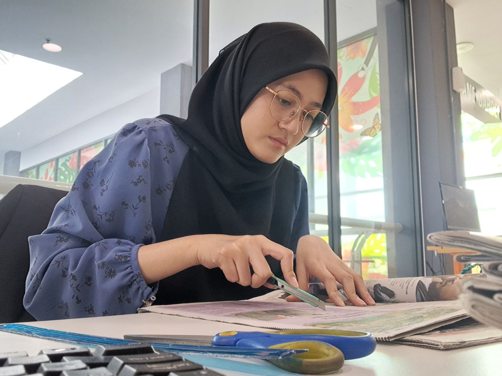

Internship

I had my internship at Perbadanan Perpustakaan Negeri Sembilan (PPANS). Assist in classifying books, promoting the library online, acquiring materials.
Mastered and applied the Dewey Decimal Classification (DDC) system to organize and shelve incoming library materials efficiently.
Managed and updated the library’s internal database system / OPAC (Online Public Access Catalog) to ensure readers could easily locate items.
Audited and cataloged collections to maintain strict organizational standards across different genres and academic sections.
Work Experience

I worked in Keria Cafe for 3 years before continuing my studies. There are a lot of things I've learned by working as a server.
Delivered high-quality customer service in a fast-paced environment, ensuring a welcoming and positive experience for all patrons.
Effectively resolved customer inquiries, special requests, and order adjustments with patience and professionalism.
Developed strong active listening and communication skills by managing high volumes of daily client interactions.